Modifiers
Introdução
Os Modifiers são operações automáticas não destrutivas que podem ser utilizadas em objetos, são utilizadas em Object Mode. Não destrutivas significa que podem ser desfeitas, repondo o estado original do objeto em que foram utilizados. Por outras palavras, para além de permitirem a configuração de diversos parâmetros, é sempre possível desfazer ou esconder temporariamente as consequências da sua ação.
É possível utilizar diferentes Modifiers num mesmo objeto ou o mesmo Modifier várias vezes, criando combinações. No entanto, como os Modifiers interagem entre si, a ordem de utilização é importante.
Os Modifiers do Blender podem ser aplicados (botão Apply) tornando-se definitivos (não se pode desfazer!).
Vários Modifiers são introduzidos automaticamente através de outros menus ou teclas de atalho. Apesar de todos poderem ser introduzidos através do menu abaixo, muitos costumam ser introduzidos de outro modo.
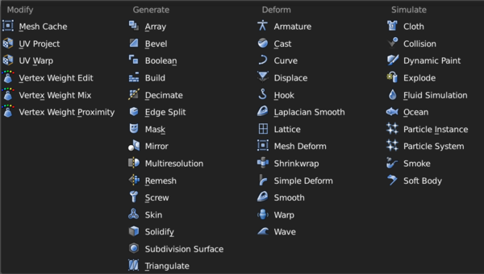Existem Modifiers de vários tipos e nem todos são úteis para modelação. Não obstante, a maioria dos Modifiers tem utilidade no contexto da modelação e permite fazer uma Non-Destructive Modeling. Ou seja, permitem realizar diversas operações sem afetar a topologia base do objeto, a sua geometria real.
A maioria dos Modifiers apresenta três opções de visualização:(des)ativar o Modifier aquando da renderização, (des)ativar o modifier na janela 3D e (des)ativar o modifier em Edit Mode.
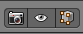Alguns modificadores permitem ainda (des)ativar o modifier para manipulação em Edit Mode.
No ponto seguinte, apresentamos alguns dos Modifiers de tipo Generate e Deform com utilização mais comum no contexto da modelação. Os restantes tipos, pelas suas especificidades, irão ser tratados noutros locais. Por exemplo, os Modifiers de tipo Simulate são abordados na secção Simulação.
 Utilização de 3 modifiers (da esq. para a dir.): Simple Deform, Mirror e Bevel
Utilização de 3 modifiers (da esq. para a dir.): Simple Deform, Mirror e Bevel
Alguns Modifiers
Array
Permite criar sequências de objetos a partir de um único. No primeiro exemplo, utilizámos um array num cubo. No segundo, adicionámos um segundo array ao mesmo objeto. Ou seja, foi criado um array de outro array.
Existem diversas opções de configuração interessantes. Destacamos a possibilidade criar um array com base num número de repetições (como no exemplo abaixo), com base numa distância ou ao longo de uma curva (Ver exemplo no final deste texto), e a configuração do Offset (distância entre os objetos criados pelo array).
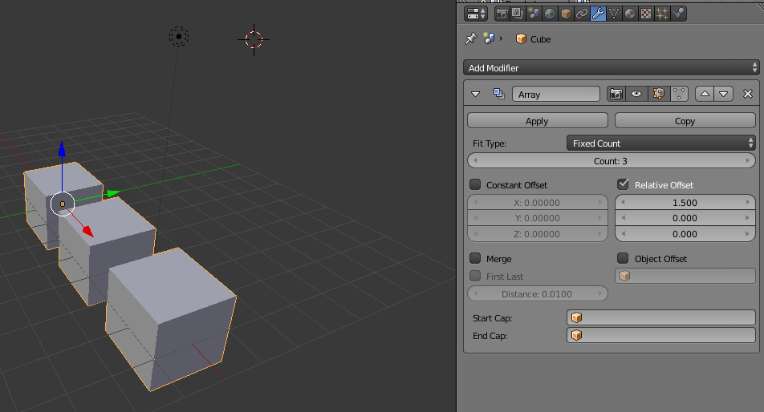 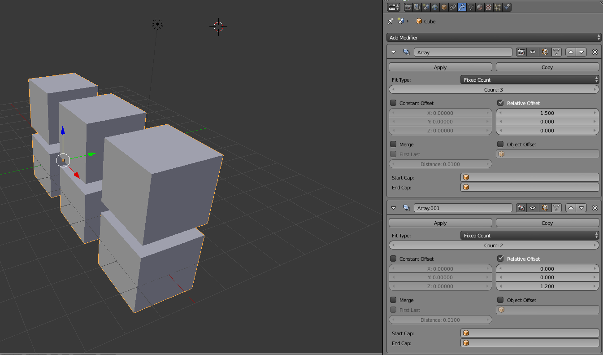Bevel
O Bevel (bisel ou chanfro) permite cortar ângulos, criando um efeito de arredondamento.
Destacam-se as seguintes opções de configuração: definir a amplitude do corte (Width); definir o número de segmentos utilizados (+ segmentos = + arredondado); utilizar o corte apenas a vértices (em vez de arestas); definir o ângulo (Angle) a partir do qual é utilizado o Bevel.
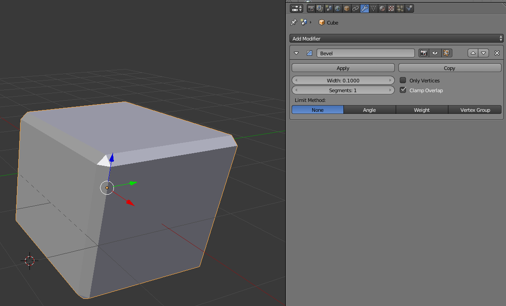Boolean
As operações Booleanas (Difference, Union, Intersect) permitem definir o resultado da interação entre dois objetos. Mais informação no texto Operações Booleanans.
Build
Build é um Modifier que permite animar facilmente a visibilidade de um objeto. O Modifier vai revelando progressivamente o objeto como se este estivesse a ser construído (build) no momento.
1- Adicione uma UV Sphere ou outro objecto a seu gosto, ou mesmo texto.
2- No painel de Modifiers, escolha Build.
Alguns dos principais parâmetros...
Start: frame em que se inicia a “construção”, em que o objecto começa a ser revelado.
Length: duração do efeito
Randomize: torna aleatória a ordem com que vão sendo reveladas (“construídas”) as faces de um objeto. [Sugestão: faça ALT+A com e sem esta opção ativada para ver a diferença na forma como a esfera é construída]
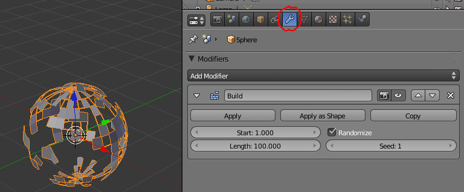Decimate
O Decimate (dizimar) permite reduzir o número de polígonos da malha onde é utilizado. É uma operação inversa ao subdividir. Tentando preservar a forma original da malha, o Modifier irá remover vértices/faces. Pode definir o Ratio (por exemplo, 0.5 significa retirar 50% das faces) e aplicar apenas a um grupo de vértices (como fizemos no exemplo abaixo). Neste último caso, terá de criar previamente um Vertex Group.
No exemplo abaixo, ativámos ainda a opção Triangulate para converter todos os quads originais em tris.
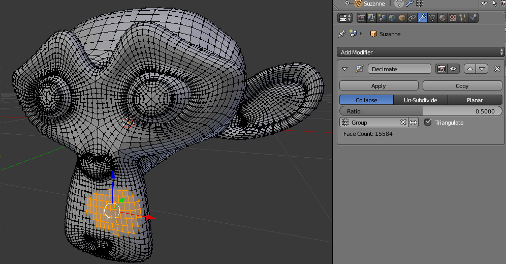 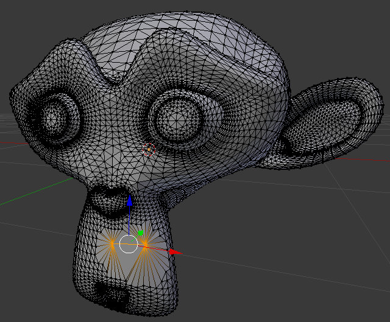Edge Split
Adiciona “sharp edges” à malha e é sobretudo útil quando aplicado em conjugação com o Smooth Shading. Permite controlar a partir de que ângulo é aplicado o Smooth Shading.
Na imagem abaixo vemos o mesmo objeto com Smooth Shading + Edge Split, só com Smooth Shading e sem Smooth Shading nem Edge Split.
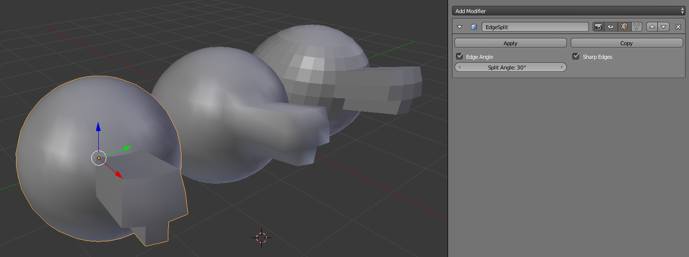Mask
Permite ocultar partes de um objeto a partir de um Vertex Group. No exemplo abaixo, criámos um Vertex Group com alguns vértices da cara da Suzanne. De seguida, utilizámos esse Vertex Group para controlar que parte do objeto fica visível.
A grande vantagem relativamente à ferramenta Hide (H) é que quando aplicamos um Hide a vértices (Edit Mode), estes não permanecem escondidos em Object Mode. Com este modifier, é possível esconder vértices que permanecem escondidos tanto em Edit Mode como em Object Mode.
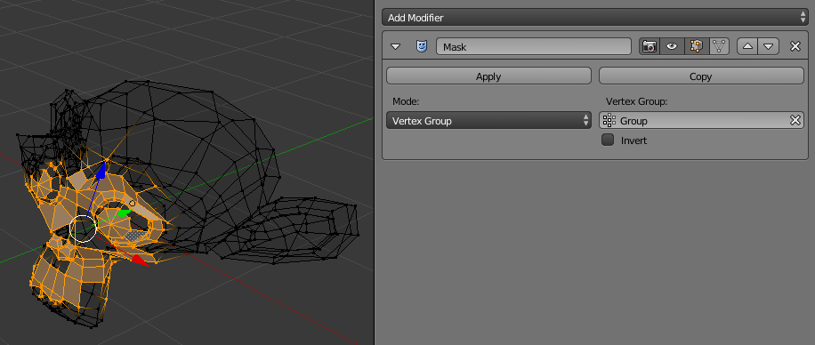 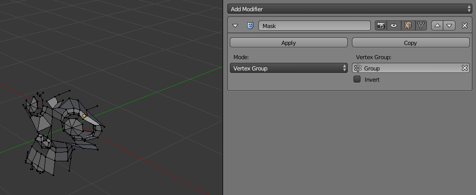Mirror
O mirror permite espelhar uma malha, permitindo modelar de forma simétrica e evitar operações em duplicado. Por pré-definição, o espelhamento é feito tendo por referência a origem de cada objeto.
Podemos definir em torno de que eixo(s) é feito o espelhamento, sendo possível ativar mais do que um.
Clipping: Evita que os vértices atravessem a fronteira do espelhamento, fundindo-os nessa mesma fonteira.
Merge: quanto ativado, funde vértices que tenham sido espelhados de acordo com o Merge Limit.
Mirror Object: permite definir outro objeto como referência para o espelhamento.
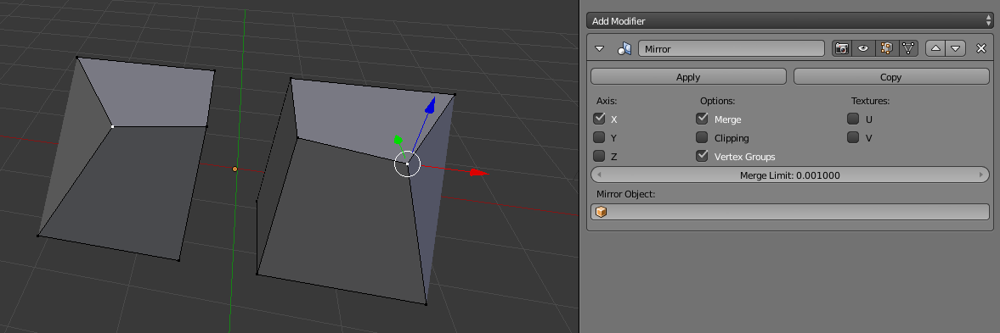Multiresolution
Este Modifier é abordado no texto sobre Sculpting.
Remesh
Remesh permite refazer a topologia de uma malha com quads.
Octree Depth: resolução da operação, quantidade de faces criadas. Mais Depth significa menos erros e uma malha mais densa (recomendação: nunca ultrapasse o 8).
Scale: Completa o Octree Depth definindo a escala das faces criadas.
No exemplo abaixo, utilizámos um cone para converter as suas faces (tris) para quads com este Modifier. Repare que na segunda imagem alterámos a escala das faces.
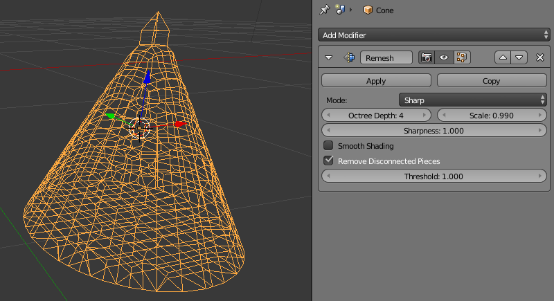 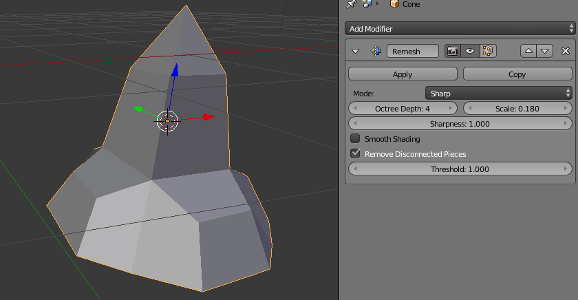Screw
Screw é sobretudo utilizado para criar espirais. Utiliza um objeto como perfil (Mesh ou Curve) e cria uma revolução em torno da origem do objeto. No exemplo abaixo, repare que o plano está deslocado da sua origem. O resultado da configuração apresentada está visível na imagem seguinte.
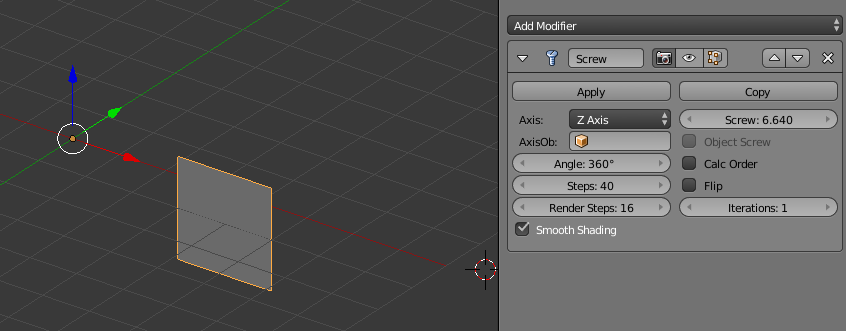Axis: Eixo em torno do qual irá fazer a revolução.
AxisOb: Objeto em torno do qual irá fazer a revolução (se não definir nenhum, utiliza a sua própria origem)
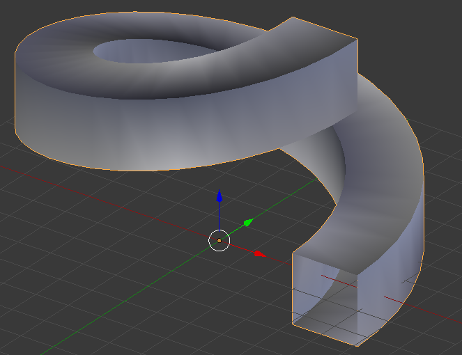Angle: Ângulo de uma revolução
Steps: número de “steps” numa revolução (equivale a resolução)
Render Steps: número de “steps” numa revolu
Screw: grau de espiral (se tiver a 0, não faz espiral, faz um círculo)
Calc Order: Calcula a ordem das arestas (pode ser necessário mas só com Meshes)
Flip: inverte os “normals”
Iterations: número de revoluções (cria uma espécie de Array).
Skin
O Skin é um Modifier bastante diferente dos restantes: utiliza as arestas de um objeto para criar “tubos”. Na realidade, o workflow habitual é modelar a partir de um vértice que pertence a um objeto que já tem este modifier aplicado. É uma forma rápida de modelar algumas formas mais simples ou de criar uma base para modelar formas orgânicas ou para Sculpting.
1. Adicione este modifier a um cubo. Em Edit Mode, selecione todos os vértices do cubo e clique em W. No menu de Specials escolha a opção Merge e depois At Center. Deste modo, ficará só com um vértice localizado no mesmo ponto onde se encontra a origem do objeto.
2. Para ver melhor o que acontece, passe para modo Wireframe. Faça alguns Extrudes até criar uma forma. Utilize o CTRL+A para modificar a dimensão ou espessura dos vértices.
3. Quando estiver satisfeito, volte a Object Mode e clique em Create Armature para criar uma armadura a partir dos vértices. Em alguns segundos, é possível criar uma forma, pronta a animar...
Branch Smoothing: suaviza a geometria nos locais onde existem vários “ramos” (interseção de vértices)
Mark/Clear Loose: nos vértices selecionados, marca (e retira) como “Loosing”, locais onde as faces se vão fundir (adelgaça)
Mark Root: define o centro do objeto
Equalize Radii: nos vértices selecionados, faz com que o raio da “skin” seja igual.
Smooth Shading: Suaviza o aspeto das faces.
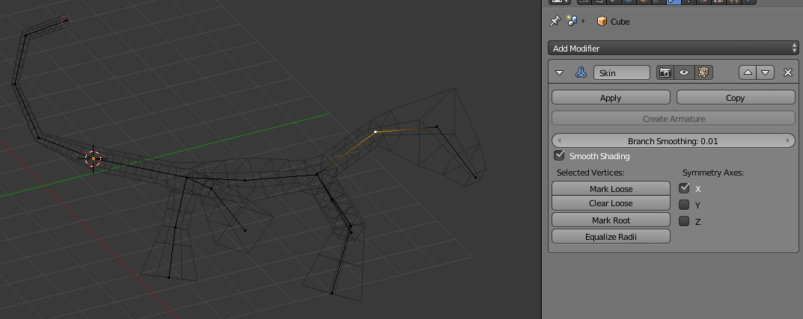 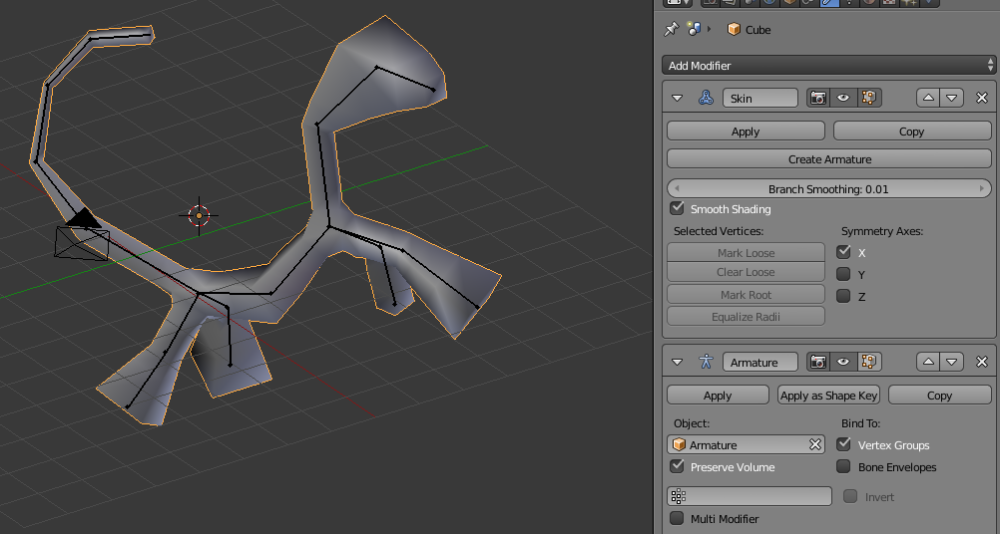 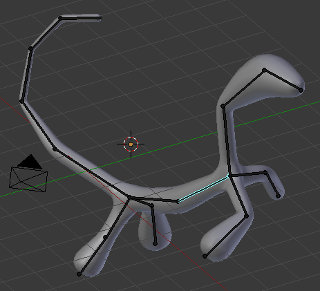Solidify
Permite atribuir espessura às faces de um objeto. Nos exemplos abaixo, aplicámos o Modifier a um plano e a um Circle (com um Extrude em Z) e alterámos a Thickness.
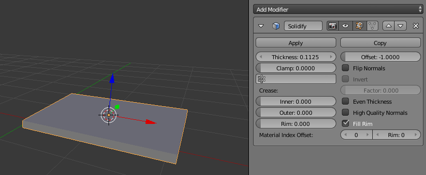 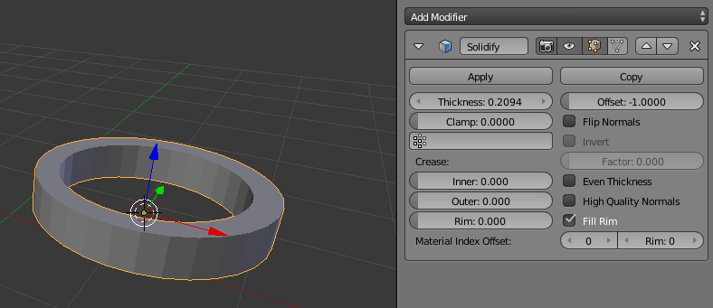Subdivision Surface
O Subdivision Surface (SubSurf) é um dos Modifiers mais utilizados. Permite subdividir e arredondar as faces de um objeto, suaviza a malha, criando geometria interpolada. Uma das grandes vantagens deste modifier é que permite trabalhar com um reduzido número de vértices (facilitando a manipulação) mas obter resultados finais só possíveis com um número mais elevado de vértices.
No exemplo abaixo, temos um cubo (8 vértices) com uma subdivisão de nível 2. É por isso que cada face do cubo parece subdividida.
O painel View e Render permite definir os níveis de subdivisão visíveis e aquando da renderização. Tipicamente, o nível de subdivisão na renderização é superior ao visualizado na área de trabalho.
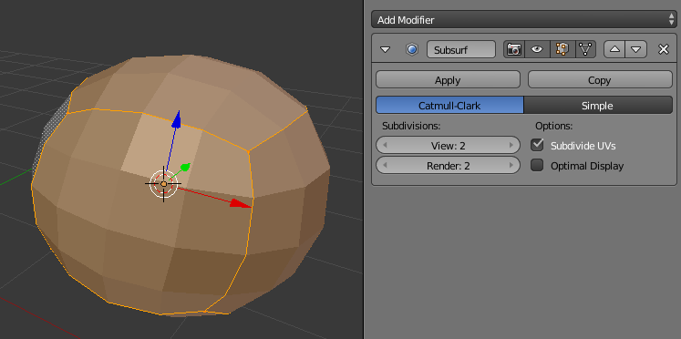Triangulate
Permite converter as faces de um objeto em triângulos (tris).
Armature
Este Modifier é abordado nos tutoriais de Rigging e armaduras. Permite utilizar Bones para deformar e animar a malha.
Cast
Permite manipular a forma de uma malha utilizando um cubo, esfera ou cilindro como referência. Adicionalmente, é possível utilizar outros objetos (Control Object), incluindo objetos com animação, para deformar a malha .
Nos exemplos abaixo, utilizámos o Cast Type Sphere num Cubo e o Cuboid na Suzanne.
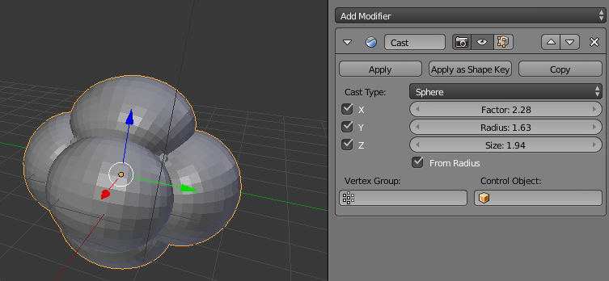 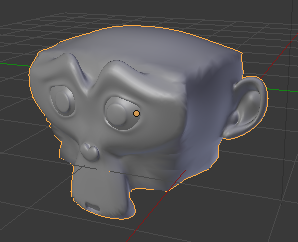Curve
Este Modifier permite deformar um objeto tendo uma Curve como referência, modifica a malha utilizando uma curva como guia.
1. Adicione uma Suzanne.
2. Adicione uma Curve > Bezier
3. Em Edit Mode, manipule a Bezier deslocando os dois controladores até obter uma forma similar à apresentada.
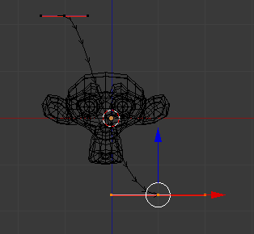4. Volte a Object Mode. Selecione a Suzanne e adicione o Modifier Curve. Selecione a Bezier Curve como Object. Se manipular (pode animar!) a Suzanne, irá ver que esta se deforma tendo em conta a curva.
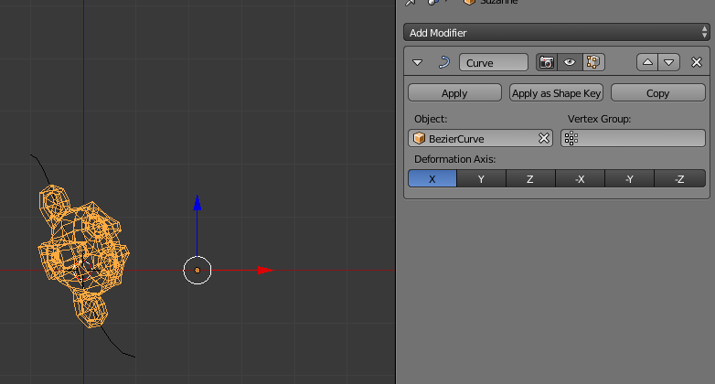Displace
A completar.
Hook
Este Modifier permite associar/aparentar vértices de um objeto a um outro objeto. Podendo depois utilizar este objeto de controlo para manipular/animar os vértices do primeiro objeto.
A forma mais simples de utilizar esta ferramenta:
1. Em Edit Mode, selecione os vértices que pretende associar ao gancho (hook).
2. Clique em CTRL+H e selecione Hook To New Object para criar um Empty como objeto de controlo. Se desejar, pode associar a um Hook já existente (Assign To Hook), remover de um Hook, etc. Se voltar a Object Mode e consultar o painel de Modifiers verá que foi criado automaticamente um Modifier de tipo Hook.
No exemplo abaixo, selecionámos os vértices do topo, fizemos CTRL+H e Hook To New Object para associar os mesmo a um Empty. Depois, movemos o Empty em Z para deslocar os vértices.
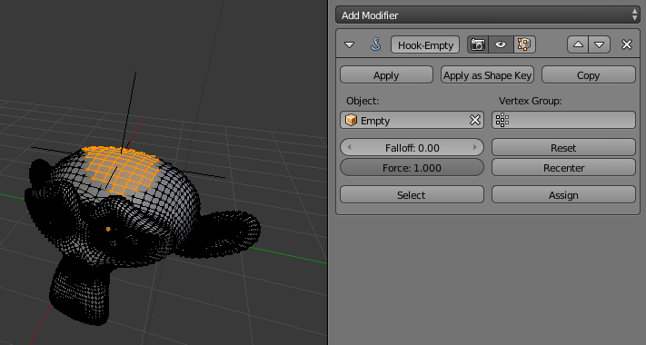
Laplacian Smooth
A completar.
Lattice
Permite utilizar uma Lattice (grade) para deformar a malha.
1- Adicione uma Suzanne. Adicione uma Lattice (Menu Add) e configure a mesma de forma semelhante à imagem abaixo.
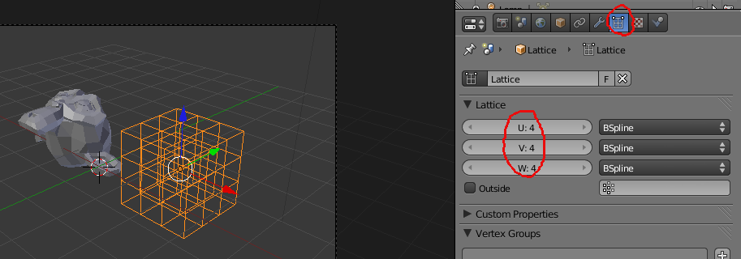2- Alinhe os dois objetos. Anime a Suzanne inserindo keyframes de Localização na frame 1 e 51 de forma a fazer com que esta atravesse a Lattice. Na frame 51, a Suzanne deverá ter atravessado totalmente a Lattice (deverá estar no lado oposto ao da imagem acima).
3- Selecione a Suzanne e, no painel Modifiers, adicione o modifier Lattice. Clique na caixa Object para escolher a Lattice que pretende associar ao objecto (pode associar várias!). Como só temos uma Lattice na cena e não modificámos o seu nome, a única opção que surge no menu é uma Lattice chamada “Lattice”.
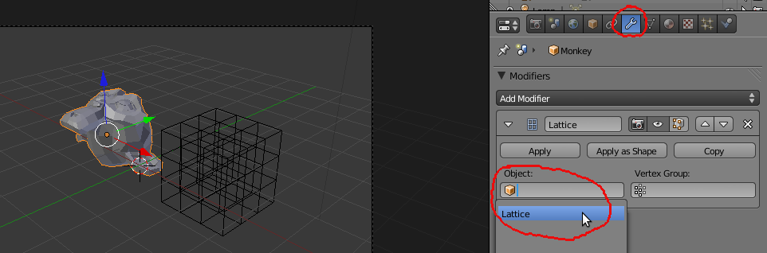4- Seleccione a Lattice e, em Edit Mode, modifique a disposição dos pontos. No nosso caso, seleccionámos todos os pontos das duas grades internas e redimensionámos em Y.
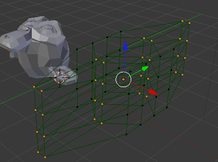Se animar (ALT+A), quando a Suzanne atravessar a Lattice deverá deformar-se de acordo com a forma/posicionamento dos pontos desta.
Mesh Deform
O modifier Mesh Deform permite utilizar uma malha fechada como “cage” (gaiola) para deformar outra malha.
No exemplo abaixo, definimos um cubo como “cage”. O modifier foi aplicado na Suzanne.
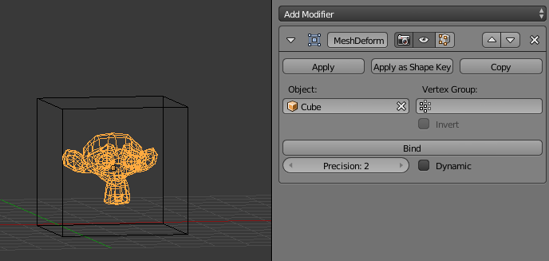 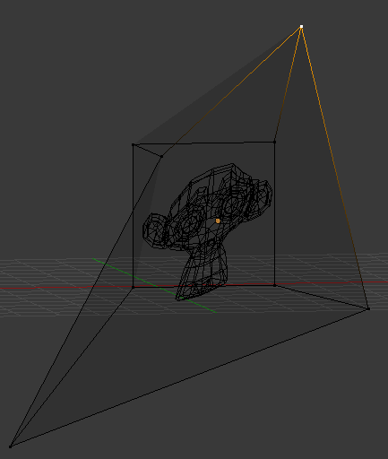Shrinkwrap
A completar.
Simple Deform
Simple Deform permite aplicar operações simples de deformação a um objeto.
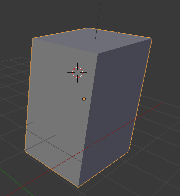Twist (torção): rotação em torno do eixo Z.
Bend (dobra): dobra a malha em torno do eixo Z.
Taper (adelgaçar): Escala ao longo do eixo Z.
Stretch (esticar/encolher): Estica ao longo do eixo Z.
Origin: Objeto que define origem da deformação (geralmente, um Empty). Este objeto pode ser rodado, redimensionado e movido.
Deform: Intensidade ou ângulo da deformação.
Limits: permite introduzir limites no topo e na base.
Locks: permite definir se existem (ou não) deformações no eixo X e Y.
Nos exemplos abaixo, utilizámos sempre o mesmo objeto.
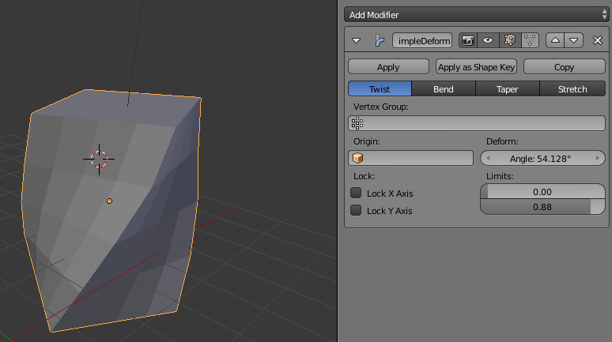 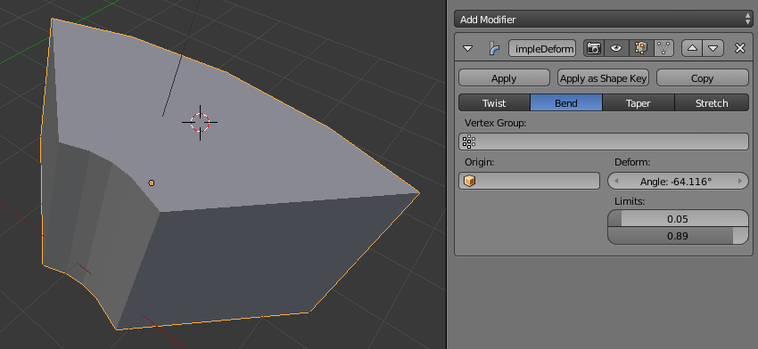 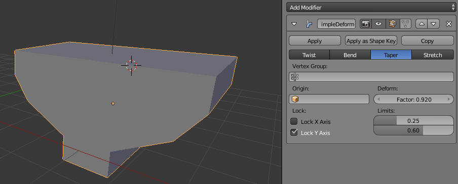 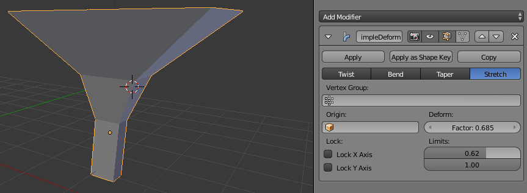Smooth
Este modifier permite suavizar a geometria da malha de um objeto, alisando os ângulos, sem aumentar o seu número de vértices.
No exemplo abaixo, as duas Suzannes têm o mesmo número de vértices. A da direita tem um modifier Smooth. O Factor define a intensidade do Smooth e o Repeat define o número de vezes que se aplica o Smooth com aquela intensidade.
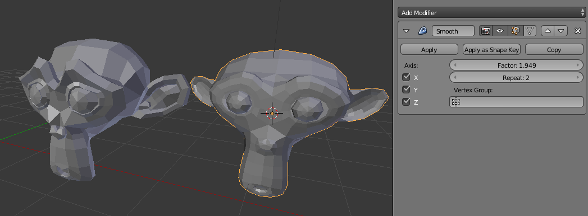Warp
O modifier Warp permite deformar a malha de um objeto através de dois outros objetos de controlo. Permite operações similares às implementadas pela ferramenta Proportional Editing.
No exemplo abaixo, utilizámos um cubo no topo (From) e um cubo em baixo (To). A movimentação do cubo existente no topo deforma a malha da Suzanne e esta é deformada na direção do cubo em baixo.
Strength: força-intensidade da deformação
Radius: amplitude-raio da deformação
Falloff Type: forma da deformação.
 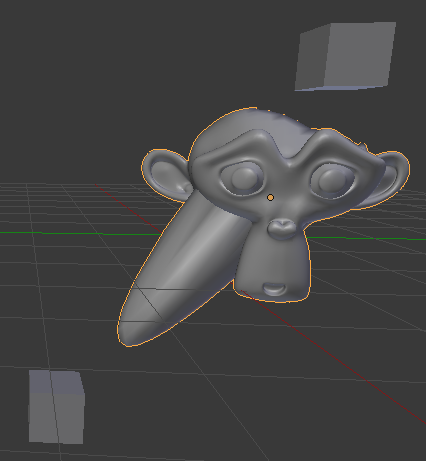
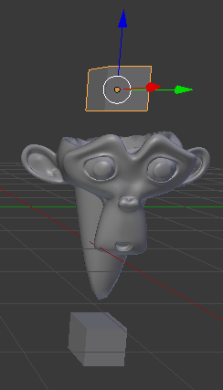
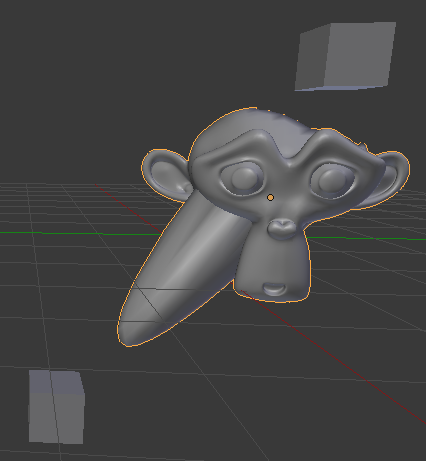
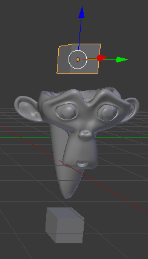
Wave
Wave é um modifier que permite criar uma animação ondulatória, criar “ondas”, deformando a malha. A deformação depende do número de vértices.
1- Adicione um plano. Redimensione o plano, aumentando-o 5 vezes, e subdivida-o 4 vezes.
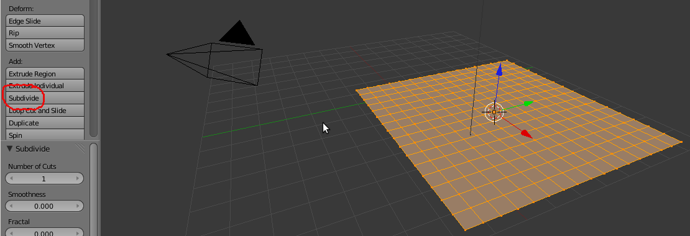2- No painel Modifiers, adicione o modifier Wave. Em modo Object, já é visível o efeito ou animação resultante desta ferramenta.
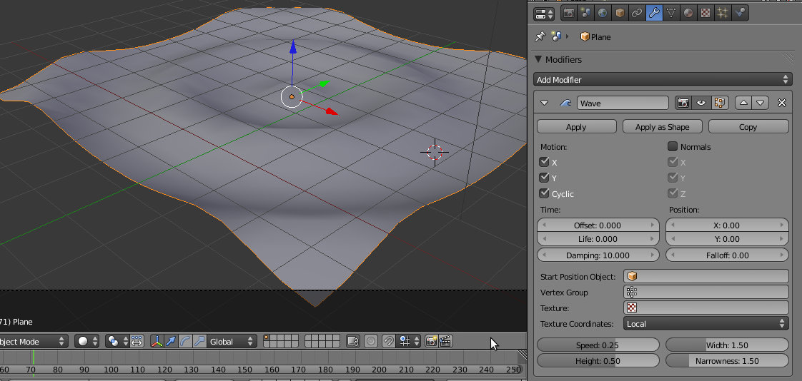As principais opções de configuração permitem definir...
...eixos ou direções em que se dá o movimento e se este é cíclico;
...quando começa (Offset) e duração (Life) do efeito;
...posição do movimento em relação ao objeto;
...forma do movimento das ondas (com destaque para altura, largura e velocidade).
Combinando Modifiers
Array + Curve
Um cubo com Array que se prolonga pelo comprimento da curva Bezier e depois com um Modifier Curve que faz com que o array se molde ao perfil da mesma curva.

Composição abstrata
Adicione um cubo. Aplique 2/3 cores diferentes a faces diferentes.
1º Array com Count 5 e Relative Offset de 1 em X
2º Array com Count 5 e Relative Offset de 1 em Y
3º Array com Count 5 e Relative Offset de 1 em Z
4º Build com Start em 1 e Length 100, Randomize ativado e Seed 1.
5º Array com Count 5 e Relative Offset de 1 em X
6º Simple Deform de tipo Bend com 250º
7º Build com Start em 1 e Length 120, Randomize ativado e Seed 2.
8º Array com Count 5 e Relative Offset de 1 em Z
9º Build com Start em 1 e Length 250, Randomize ativado e Seed 1.
10º Bevel com Width 0.1 e Clamp Overlap ativado
11º Solidify com Thickness 0.03
12º Cast do tipo Cylinder e utilize um Empty como Control Objet.
Avance algumas frames a seu gosto (com menos de 50 não deverá ver muito...)
Se desejar, modifique algumas das configurações a seu gosto.
Posicione a câmara, configure a iluminação e Renderize!
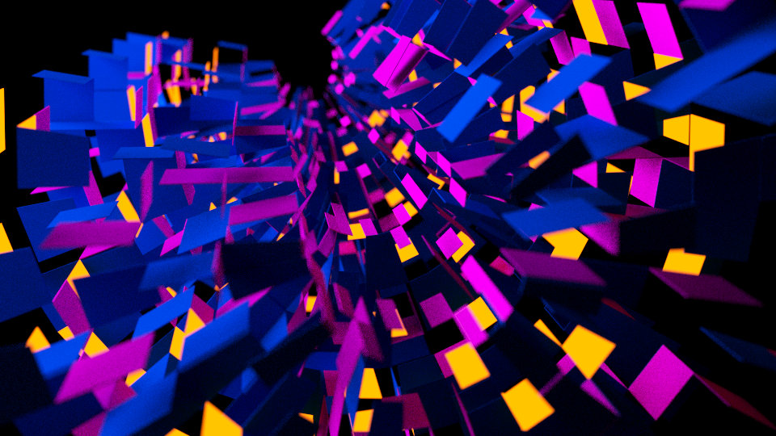Recursos adicionais
Para mais informações sobre os modifiers disponíveis no Blender...